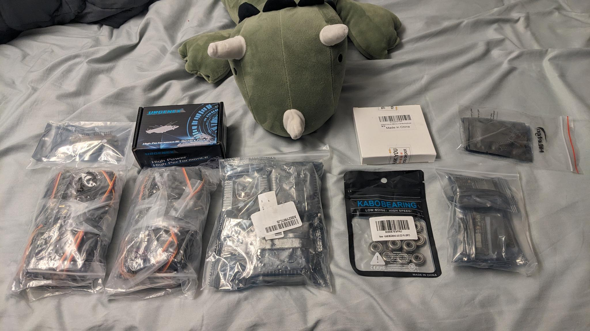

Parts Have Arrived

It has been a little while! Unfortunately, with exams and the game jam popping up, all my time was going towards those. But, in the meantime, parts for the robot dog have arrived! With that news, the next steps for me is to get one leg working and making a good path of motion, as well as looking into finding hardware or ordering that.